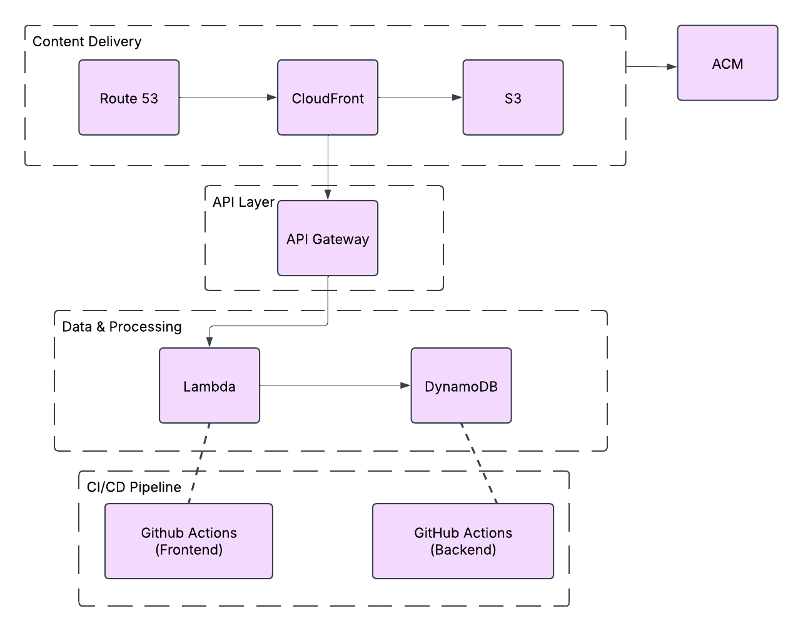

Over the course of this blog series, we've successfully completed the Cloud Resume Challenge using Terraform as our infrastructure-as-code tool. Let's recap what we've accomplished:
Set up our development environment with Terraform and AWS credentials
Deployed a static website using S3, CloudFront, Route 53, and ACM
Built a serverless backend API with API Gateway, Lambda, and DynamoDB
Implemented CI/CD pipelines with GitHub Actions for automated deployments
Added security enhancements like OIDC authentication and least-privilege IAM policies
The final architecture we've created looks like this:

The most valuable aspect of this project is that we've built a completely automated, production-quality cloud solution. Every component is defined as code, enabling us to track changes, rollback if needed, and redeploy the entire infrastructure with minimal effort.
Challenge: As the project grew, managing Terraform state became more complex, especially when working across different environments.
Solution: I restructured the project to use workspaces and remote state with careful output references between modules. This improved state organization and made multi-environment deployments more manageable.
The ability to define, version, and automate infrastructure is increasingly essential in modern IT environments. This project showcases expertise with Terraform that can be applied to any cloud provider or on-premises infrastructure.
Setting up CI/CD workflows that automate testing and deployment demonstrates key DevOps skills that organizations need to accelerate their development cycles.
The backend API implementation shows understanding of event-driven, serverless architecture patterns that are becoming standard for new cloud applications.
The security considerations throughout the project - from IAM roles to OIDC authentication - demonstrate the ability to build secure systems from the ground up.
While this solution is relatively inexpensive, it's good practice to set up AWS Budgets and alerts to monitor costs. My current monthly costs are approximately:
Enhance reliability and performance by deploying to multiple AWS regions:
module"frontend_us_east_1"{source="./modules/frontend"providers={aws=aws.us_east_1} # Configuration for US East region}module"frontend_eu_west_1"{source="./modules/frontend"providers={aws=aws.eu_west_1} # Configuration for EU West region}resource"aws_route53_health_check""primary_region"{fqdn=module.frontend_us_east_1.cloudfront_domain_nameport=443type="HTTPS"resource_path="/"failure_threshold=3request_interval=30}resource"aws_route53_record""global"{zone_id=data.aws_route53_zone.selected.zone_idname=var.domain_nametype="CNAME"failover_routing_policy{type="PRIMARY"}health_check_id=aws_route53_health_check.primary_region.idset_identifier="primary"records=[module.frontend_us_east_1.cloudfront_domain_name]ttl=300}
I've moved from basic cloud knowledge to being able to architect and implement complex, multi-service solutions. The hands-on experience with Terraform has been particularly valuable, as it's a highly sought-after skill in the job market.
This project now serves as both my resume and a demonstration of my cloud engineering capabilities. I've included the GitHub repository links on my resume, allowing potential employers to see the code behind the deployment.
Sharing this project through blog posts has connected me with the broader cloud community. The feedback and discussions have been invaluable for refining my approach and learning from others.
The Cloud Resume Challenge has been an invaluable learning experience. By implementing it with Terraform, I've gained practical experience with both AWS services and infrastructure as code - skills that are directly applicable to professional cloud engineering roles.
What makes this challenge particularly powerful is how it combines so many aspects of modern cloud development:
Front-end web development
Back-end serverless APIs
Infrastructure as code
CI/CD automation
Security implementation
DNS configuration
Content delivery networks
If you're following along with this series, I encourage you to customize and extend the project to showcase your unique skills and interests. The foundational architecture we've built provides a flexible platform that can evolve with your career.
For those just starting their cloud journey, this challenge offers a perfect blend of practical skills in a realistic project that demonstrates end-to-end capabilities. It's far more valuable than isolated tutorials or theoretical knowledge alone.
The cloud engineering field continues to evolve rapidly, but the principles we've applied throughout this project - automation, security, scalability, and operational excellence - remain constants regardless of which specific technologies are in favor.
While this concludes our Cloud Resume Challenge series, my cloud learning journey continues. Some areas I'm exploring next include:
Kubernetes and container orchestration
Infrastructure testing frameworks
Cloud cost optimization
Multi-cloud deployments
Infrastructure security scanning
Service mesh implementations
I hope this series has been helpful in your own cloud journey. Feel free to reach out with questions or to share your own implementations of the challenge!
This post concludes our Cloud Resume Challenge with Terraform series. Thanks for following along!
In our previous posts, we built the frontend and backend components of our cloud resume project. Now it's time to take our implementation to the next level by implementing continuous integration and deployment (CI/CD) with GitHub Actions.
When I first started this challenge, I manually ran terraform apply every time I made a change. This quickly became tedious and error-prone. As a cloud engineer, I wanted to demonstrate a professional approach to infrastructure management by implementing proper CI/CD pipelines.
Automating deployments offers several key benefits:
Consistency: Every deployment follows the same process
Efficiency: No more manual steps or waiting around
Safety: Automated tests catch issues before they reach production
Auditability: Each change is tracked with a commit and workflow run
This approach mirrors how professional cloud teams work and is a crucial skill for any cloud engineer.
Then, create an IAM role that GitHub Actions can assume:
# oidc-role.tfresource"aws_iam_role""github_actions"{name="github-actions-role"assume_role_policy=jsonencode({Version="2012-10-17"Statement=[{Action="sts:AssumeRoleWithWebIdentity"Effect="Allow"Principal={Federated=aws_iam_openid_connect_provider.github.arn}Condition={StringEquals={"token.actions.githubusercontent.com:aud"="sts.amazonaws.com"}StringLike={"token.actions.githubusercontent.com:sub"="repo:${var.github_org}/${var.github_repo}:*"}}}]})}# Attach policies to the roleresource"aws_iam_role_policy_attachment""terraform_permissions"{role=aws_iam_role.github_actions.namepolicy_arn=aws_iam_policy.terraform_permissions.arn}resource"aws_iam_policy""terraform_permissions"{name="terraform-deployment-policy"description="Policy for Terraform deployments via GitHub Actions"policy=jsonencode({Version="2012-10-17"Statement=[{Action=["s3:*","cloudfront:*","route53:*","acm:*","lambda:*","apigateway:*","dynamodb:*","logs:*","iam:GetRole","iam:PassRole","iam:CreateRole","iam:DeleteRole","iam:PutRolePolicy","iam:DeleteRolePolicy","iam:AttachRolePolicy","iam:DetachRolePolicy"]Effect="Allow"Resource="*"}]})}
For a production environment, I would use more fine-grained permissions, but this policy works for our demonstration.
Let's create a simple Cypress test to verify that our visitor counter is working. First, create a package.json file in the root of your frontend repository:
{"name":"cloud-resume-frontend","version":"1.0.0","description":"Frontend for Cloud Resume Challenge","scripts":{"test":"cypress open","test:ci":"cypress run"},"devDependencies":{"cypress":"^12.0.0"}}
Then create a Cypress test at tests/cypress/integration/counter.spec.js:
describe('Resume Website Tests',()=>{beforeEach(()=>{// Visit the home page before each testcy.visit('/');});it('should load the resume page',()=>{// Check that we have a titlecy.get('h1').should('be.visible');// Check that key sections existcy.contains('Experience').should('be.visible');cy.contains('Education').should('be.visible');cy.contains('Skills').should('be.visible');});it('should load and display the visitor counter',()=>{// Check that the counter element existscy.get('#count').should('exist');// Wait for the counter to update (should not remain at 0)cy.get('#count',{timeout:10000}).should('not.contain','0').should('not.contain','Loading');// Verify the counter shows a numbercy.get('#count').invoke('text').then(parseFloat).should('be.gt',0);});});
One of the most valuable CI/CD patterns is deploying to multiple environments. Let's modify our backend workflow to support both development and production environments:
# Additional job for production deployment after dev is successfulpromote-to-prod:name:'PromotetoProduction'runs-on:ubuntu-latestneeds:test-apienvironment:productionif:github.event_name == 'workflow_dispatch'steps:-name:Checkout Repositoryuses:actions/checkout@v3-name:Configure AWS Credentialsuses:aws-actions/configure-aws-credentials@v2with:role-to-assume:arn:aws:iam::${{ secrets.AWS_ACCOUNT_ID }}:role/github-actions-roleaws-region:us-east-1-name:Setup Terraformuses:hashicorp/setup-terraform@v2with:terraform_version:1.2.0-name:Terraform Initworking-directory:./terraform/environments/prodrun:terraform init -backend-config="bucket=${{ secrets.TF_STATE_BUCKET }}" -backend-config="key=${{ secrets.TF_STATE_KEY_PROD }}" -backend-config="region=us-east-1"-name:Terraform Planworking-directory:./terraform/environments/prodrun:terraform plan -var="environment=prod" -var="domain_name=${{ secrets.DOMAIN_NAME_PROD }}" -out=tfplan-name:Terraform Applyworking-directory:./terraform/environments/prodrun:terraform apply -auto-approve tfplan-name:Test Production APIrun:|API_ENDPOINT=$(aws cloudformation describe-stacks --stack-name resume-backend-prod --query "Stacks[0].Outputs[?OutputKey=='ApiEndpoint'].OutputValue" --output text)response=$(curl -s "$API_ENDPOINT/count")echo "API Response: $response"# Check if the response contains a count fieldecho $response | grep -q '"count":'if [ $? -eq 0 ]; thenecho "Production API test successful"elseecho "Production API test failed"exit 1fi
Create a file at .github/dependabot.yml in both repositories:
version:2updates:-package-ecosystem:"github-actions"directory:"/"schedule:interval:"weekly"open-pull-requests-limit:10# For frontend-package-ecosystem:"npm"directory:"/"schedule:interval:"weekly"open-pull-requests-limit:10# For backend-package-ecosystem:"pip"directory:"/"schedule:interval:"weekly"open-pull-requests-limit:10
This configuration automatically updates dependencies and identifies security vulnerabilities.
Create a file at tests/integration-test.js in the frontend repository:
constaxios=require('axios');constassert=require('assert');// URLs to test - these should be passed as environment variablesconstWEBSITE_URL=process.env.WEBSITE_URL||'https://resume.yourdomain.com';constAPI_URL=process.env.API_URL||'https://api.yourdomain.com/count';// Test that the API returns a valid responseasyncfunctiontestAPI(){try{console.log(`Testing API at ${API_URL}`);constresponse=awaitaxios.get(API_URL);// Verify the API response contains a countassert(response.status===200,`API returned status ${response.status}`);assert(response.data.count!==undefined,'API response missing count field');assert(typeofresponse.data.count==='number','Count is not a number');console.log(`API test successful. Count: ${response.data.count}`);returntrue;}catch(error){console.error('API test failed:',error.message);returnfalse;}}// Test that the website loads and contains necessary elementsasyncfunctiontestWebsite(){try{console.log(`Testing website at ${WEBSITE_URL}`);constresponse=awaitaxios.get(WEBSITE_URL);// Verify the website loadsassert(response.status===200,`Website returned status ${response.status}`);// Check that the page contains some expected contentassert(response.data.includes('<html'),'Response is not HTML');assert(response.data.includes('id="count"'),'Counter element not found');console.log('Website test successful');returntrue;}catch(error){console.error('Website test failed:',error.message);returnfalse;}}// Run all testsasyncfunctionrunTests(){constapiResult=awaittestAPI();constwebsiteResult=awaittestWebsite();if(apiResult&&websiteResult){console.log('All integration tests passed!');process.exit(0);}else{console.error('Some integration tests failed');process.exit(1);}}// Run the testsrunTests();
Implementing CI/CD for this project taught me several valuable lessons:
Start Simple, Then Iterate: My first workflow was basic - just syncing files to S3. As I gained confidence, I added testing, multiple environments, and security features.
Security Is Non-Negotiable: Using OIDC for authentication instead of long-lived credentials was a game-changer for security. This approach follows AWS best practices and eliminates credential management headaches.
Test Everything: Automated tests at every level (unit, integration, end-to-end) catch issues early. The time invested in writing tests paid off with more reliable deployments.
Environment Separation: Keeping development and production environments separate allowed me to test changes safely before affecting the live site.
Infrastructure as Code Works: Using Terraform to define all infrastructure components made the CI/CD process much more reliable. Everything is tracked, versioned, and repeatable.
During implementation, I encountered several challenges:
CORS Issues: The API and website needed proper CORS configuration to work together. Adding the correct headers in both Lambda and API Gateway fixed this.
Environment Variables: Managing different configurations for dev and prod was tricky. I solved this by using GitHub environment variables and separate Terraform workspaces.
Cache Invalidation Delays: Changes to the website sometimes weren't visible immediately due to CloudFront caching. Adding proper cache invalidation to the workflow fixed this.
State Locking: When multiple workflow runs executed simultaneously, they occasionally conflicted on Terraform state. Using DynamoDB for state locking resolved this issue.
And add a cleanup job to delete the preview environment when the PR is closed:
cleanup_preview:name:'CleanupPreviewEnvironment'runs-on:ubuntu-latestif:github.event_name == 'pull_request' && github.event.action == 'closed'steps:# Similar to create_preview but with terraform destroy
To enhance the security of our API, I added API key authentication using AWS Secrets Manager:
# Create a secret to store the API keyresource"aws_secretsmanager_secret""api_key"{name="resume-api-key-${var.environment}"description="API key for the Resume API"}# Generate a random API keyresource"random_password""api_key"{length=32special=false}# Store the API key in Secrets Managerresource"aws_secretsmanager_secret_version""api_key"{secret_id=aws_secretsmanager_secret.api_key.idsecret_string=random_password.api_key.result}# Add API key to API Gatewayresource"aws_api_gateway_api_key""visitor_counter"{name="visitor-counter-key-${var.environment}"}resource"aws_api_gateway_usage_plan""visitor_counter"{name="visitor-counter-usage-plan-${var.environment}"api_stages{api_id=aws_api_gateway_rest_api.visitor_counter.idstage=aws_api_gateway_deployment.visitor_counter.stage_name}quota_settings{limit=1000period="DAY"}throttle_settings{burst_limit=10rate_limit=5}}resource"aws_api_gateway_usage_plan_key""visitor_counter"{key_id=aws_api_gateway_api_key.visitor_counter.idkey_type="API_KEY"usage_plan_id=aws_api_gateway_usage_plan.visitor_counter.id}# Update the Lambda function to verify the API keyresource"aws_lambda_function""visitor_counter"{ # ... existing configuration ...environment{variables={DYNAMODB_TABLE=aws_dynamodb_table.visitor_counter.nameALLOWED_ORIGIN=var.website_domainAPI_KEY_SECRET=aws_secretsmanager_secret.api_key.name}}}
Then, modify the Lambda function to retrieve and validate the API key:
importboto3importjsonimportos# Initialize Secrets Manager clientsecretsmanager=boto3.client('secretsmanager')defget_api_key():"""Retrieve the API key from Secrets Manager"""secret_name=os.environ['API_KEY_SECRET']response=secretsmanager.get_secret_value(SecretId=secret_name)returnresponse['SecretString']deflambda_handler(event,context):# Verify API keyapi_key=event.get('headers',{}).get('x-api-key')expected_api_key=get_api_key()ifapi_key!=expected_api_key:return{'statusCode':403,'headers':{'Content-Type':'application/json'},'body':json.dumps({'error':'Forbidden','message':'Invalid API key'})}# Rest of the function...
With our CI/CD pipelines in place, our Cloud Resume Challenge implementation is complete! In the final post, we'll reflect on the project as a whole, discuss lessons learned, and explore potential future enhancements.
Up Next: [Cloud Resume Challenge with Terraform: Final Thoughts & Lessons Learned] 🔗
In our previous posts, we set up the frontend infrastructure for our resume website using Terraform. Now it's time to build the backend API that will power our visitor counter.
Before diving into the Terraform code, I want to share my thought process on DynamoDB table design. When I initially approached this challenge, I had to decide between two approaches:
Single-counter approach: A simple table with just one item for the counter
Visitor log approach: A more detailed table that logs each visit with timestamps
I chose the second approach for a few reasons:
It allows for more detailed analytics in the future
It provides a history of visits that can be queried
It demonstrates a more realistic use case for DynamoDB
Here's my table design:
Attribute
Type
Description
visit_id
String
Primary key (UUID)
timestamp
String
ISO8601 timestamp of the visit
visitor_ip
String
Hashed IP address for privacy
user_agent
String
Browser/device information
path
String
Page path visited
This approach gives us flexibility while keeping the solution serverless and cost-effective.
resource"aws_dynamodb_table""visitor_counter"{name="ResumeVisitorCounter-${var.environment}"billing_mode="PAY_PER_REQUEST" # On-demand capacity for cost savingshash_key="visit_id"attribute{name="visit_id"type="S"} # Add TTL for automatic data cleanup after 90 daysttl{attribute_name="expiration_time"enabled=true}point_in_time_recovery{enabled=true # Enable PITR for recovery options} # Use server-side encryptionserver_side_encryption{enabled=true}tags={Name="Resume Visitor Counter"Environment=var.environmentProject="Cloud Resume Challenge"}}# Create a GSI for timestamp-based queriesresource"aws_dynamodb_table_item""counter_init"{table_name=aws_dynamodb_table.visitor_counter.namehash_key=aws_dynamodb_table.visitor_counter.hash_key # Initialize the counter with a value of 0item=jsonencode({"visit_id":{"S":"total"},"count":{"N":"0"}}) # Only create this item on initial deploymentlifecycle{ignore_changes=[item]}}
I've implemented several enhancements:
Point-in-time recovery for data protection
TTL for automatic cleanup of old records
Server-side encryption for security
An initial counter item to ensure we don't have "cold start" issues
Now, let's create our Lambda function. First, we'll need the Python code. Create a file at modules/backend/lambda/visitor_counter.py:
importboto3importjsonimportosimportuuidimportloggingfromdatetimeimportdatetime,timedeltaimporthashlibfrombotocore.exceptionsimportClientError# Set up logginglogger=logging.getLogger()logger.setLevel(logging.INFO)# Initialize DynamoDB clientdynamodb=boto3.resource('dynamodb')table_name=os.environ['DYNAMODB_TABLE']table=dynamodb.Table(table_name)deflambda_handler(event,context):""" Lambda handler to process API Gateway requests for visitor counting. Increments the visitor counter and returns the updated count. """logger.info(f"Processing event: {json.dumps(event)}")try:# Extract request informationrequest_context=event.get('requestContext',{})http_method=event.get('httpMethod','')path=event.get('path','')headers=event.get('headers',{})ip_address=request_context.get('identity',{}).get('sourceIp','unknown')user_agent=headers.get('User-Agent','unknown')# Generate a unique visit IDvisit_id=str(uuid.uuid4())# Hash the IP address for privacyhashed_ip=hashlib.sha256(ip_address.encode()).hexdigest()# Get current timestamptimestamp=datetime.utcnow().isoformat()# Calculate expiration time (90 days from now)expiration_time=int((datetime.utcnow()+timedelta(days=90)).timestamp())# Log the visittable.put_item(Item={'visit_id':visit_id,'timestamp':timestamp,'visitor_ip':hashed_ip,'user_agent':user_agent,'path':path,'expiration_time':expiration_time})# Update the total counterresponse=table.update_item(Key={'visit_id':'total'},UpdateExpression='ADD #count :incr',ExpressionAttributeNames={'#count':'count'},ExpressionAttributeValues={':incr':1},ReturnValues='UPDATED_NEW')count=int(response['Attributes']['count'])# Return the responsereturn{'statusCode':200,'headers':{'Content-Type':'application/json','Access-Control-Allow-Origin':os.environ['ALLOWED_ORIGIN'],'Access-Control-Allow-Methods':'GET, OPTIONS','Access-Control-Allow-Headers':'Content-Type'},'body':json.dumps({'count':count,'message':'Visitor count updated successfully'})}exceptClientErrorase:logger.error(f"DynamoDB error: {e}")return{'statusCode':500,'headers':{'Content-Type':'application/json','Access-Control-Allow-Origin':os.environ.get('ALLOWED_ORIGIN','*')},'body':json.dumps({'error':'Database error','message':str(e)})}exceptExceptionase:logger.error(f"General error: {e}")return{'statusCode':500,'headers':{'Content-Type':'application/json','Access-Control-Allow-Origin':os.environ.get('ALLOWED_ORIGIN','*')},'body':json.dumps({'error':'Server error','message':str(e)})}defoptions_handler(event,context):""" Handler for OPTIONS requests to support CORS """return{'statusCode':200,'headers':{'Access-Control-Allow-Origin':os.environ.get('ALLOWED_ORIGIN','*'),'Access-Control-Allow-Methods':'GET, OPTIONS','Access-Control-Allow-Headers':'Content-Type'},'body':''}
Now, let's create the Lambda function using Terraform. Create a file at modules/backend/lambda.tf:
# Archive the Lambda function codedata"archive_file""lambda_zip"{type="zip"source_file="${path.module}/lambda/visitor_counter.py"output_path="${path.module}/lambda/visitor_counter.zip"}# Create the Lambda functionresource"aws_lambda_function""visitor_counter"{filename=data.archive_file.lambda_zip.output_pathfunction_name="resume-visitor-counter-${var.environment}"role=aws_iam_role.lambda_role.arnhandler="visitor_counter.lambda_handler"source_code_hash=data.archive_file.lambda_zip.output_base64sha256runtime="python3.9"timeout=10 # Increased timeout for better error handlingmemory_size=128environment{variables={DYNAMODB_TABLE=aws_dynamodb_table.visitor_counter.nameALLOWED_ORIGIN=var.website_domain}}tracing_config{mode="Active" # Enable X-Ray tracing}tags={Name="Resume Visitor Counter Lambda"Environment=var.environmentProject="Cloud Resume Challenge"}}# Create an IAM role for the Lambda functionresource"aws_iam_role""lambda_role"{name="resume-visitor-counter-lambda-role-${var.environment}"assume_role_policy=jsonencode({Version="2012-10-17"Statement=[{Action="sts:AssumeRole"Effect="Allow"Principal={Service="lambda.amazonaws.com"}}]})}# Create a custom policy for the Lambda function with least privilegeresource"aws_iam_policy""lambda_policy"{name="resume-visitor-counter-lambda-policy-${var.environment}"description="IAM policy for the visitor counter Lambda function"policy=jsonencode({Version="2012-10-17"Statement=[{Action=["dynamodb:GetItem","dynamodb:PutItem","dynamodb:UpdateItem"]Effect="Allow"Resource=aws_dynamodb_table.visitor_counter.arn},{Action=["logs:CreateLogGroup","logs:CreateLogStream","logs:PutLogEvents"]Effect="Allow"Resource="arn:aws:logs:*:*:*"},{Action=["xray:PutTraceSegments","xray:PutTelemetryRecords"]Effect="Allow"Resource="*"}]})}# Attach the policy to the IAM roleresource"aws_iam_role_policy_attachment""lambda_policy_attachment"{role=aws_iam_role.lambda_role.namepolicy_arn=aws_iam_policy.lambda_policy.arn}# Create a CloudWatch log group for the Lambda functionresource"aws_cloudwatch_log_group""lambda_log_group"{name="/aws/lambda/${aws_lambda_function.visitor_counter.function_name}"retention_in_days=30tags={Environment=var.environmentProject="Cloud Resume Challenge"}}# Create a Lambda function for handling OPTIONS requests (CORS)resource"aws_lambda_function""options_handler"{filename=data.archive_file.lambda_zip.output_pathfunction_name="resume-visitor-counter-options-${var.environment}"role=aws_iam_role.lambda_role.arnhandler="visitor_counter.options_handler"source_code_hash=data.archive_file.lambda_zip.output_base64sha256runtime="python3.9"timeout=10memory_size=128environment{variables={ALLOWED_ORIGIN=var.website_domain}}tags={Name="Resume Options Handler Lambda"Environment=var.environmentProject="Cloud Resume Challenge"}}
I've implemented several security and operational improvements:
Least privilege IAM policies
X-Ray tracing for performance monitoring
Proper CORS handling with a dedicated OPTIONS handler
# Create the API Gateway REST APIresource"aws_api_gateway_rest_api""visitor_counter"{name="resume-visitor-counter-${var.environment}"description="API for the resume visitor counter"endpoint_configuration{types=["REGIONAL"]}tags={Name="Resume Visitor Counter API"Environment=var.environmentProject="Cloud Resume Challenge"}}# Create a resource for the APIresource"aws_api_gateway_resource""visitor_counter"{rest_api_id=aws_api_gateway_rest_api.visitor_counter.idparent_id=aws_api_gateway_rest_api.visitor_counter.root_resource_idpath_part="count"}# Create a GET method for the APIresource"aws_api_gateway_method""get"{rest_api_id=aws_api_gateway_rest_api.visitor_counter.idresource_id=aws_api_gateway_resource.visitor_counter.idhttp_method="GET"authorization_type="NONE" # Add API key requirement if needed # api_key_required = true}# Create an OPTIONS method for the API (for CORS)resource"aws_api_gateway_method""options"{rest_api_id=aws_api_gateway_rest_api.visitor_counter.idresource_id=aws_api_gateway_resource.visitor_counter.idhttp_method="OPTIONS"authorization_type="NONE"}# Set up the GET method integration with Lambdaresource"aws_api_gateway_integration""lambda_get"{rest_api_id=aws_api_gateway_rest_api.visitor_counter.idresource_id=aws_api_gateway_resource.visitor_counter.idhttp_method=aws_api_gateway_method.get.http_methodintegration_http_method="POST"type="AWS_PROXY"uri=aws_lambda_function.visitor_counter.invoke_arn}# Set up the OPTIONS method integration with Lambdaresource"aws_api_gateway_integration""lambda_options"{rest_api_id=aws_api_gateway_rest_api.visitor_counter.idresource_id=aws_api_gateway_resource.visitor_counter.idhttp_method=aws_api_gateway_method.options.http_methodintegration_http_method="POST"type="AWS_PROXY"uri=aws_lambda_function.options_handler.invoke_arn}# Create a deployment for the APIresource"aws_api_gateway_deployment""visitor_counter"{depends_on=[aws_api_gateway_integration.lambda_get,aws_api_gateway_integration.lambda_options]rest_api_id=aws_api_gateway_rest_api.visitor_counter.idstage_name=var.environmentlifecycle{create_before_destroy=true}}# Add permission for API Gateway to invoke the Lambda functionresource"aws_lambda_permission""api_gateway_lambda"{statement_id="AllowAPIGatewayInvoke"action="lambda:InvokeFunction"function_name=aws_lambda_function.visitor_counter.function_nameprincipal="apigateway.amazonaws.com" # The /* part allows invocation from any stage, method and resource path # within API Gatewaysource_arn="${aws_api_gateway_rest_api.visitor_counter.execution_arn}/*/${aws_api_gateway_method.get.http_method}${aws_api_gateway_resource.visitor_counter.path}"}# Add permission for API Gateway to invoke the OPTIONS Lambda functionresource"aws_lambda_permission""api_gateway_options_lambda"{statement_id="AllowAPIGatewayInvokeOptions"action="lambda:InvokeFunction"function_name=aws_lambda_function.options_handler.function_nameprincipal="apigateway.amazonaws.com"source_arn="${aws_api_gateway_rest_api.visitor_counter.execution_arn}/*/${aws_api_gateway_method.options.http_method}${aws_api_gateway_resource.visitor_counter.path}"}# Enable CloudWatch logging for API Gatewayresource"aws_api_gateway_account""main"{cloudwatch_role_arn=aws_iam_role.api_gateway_cloudwatch.arn}resource"aws_iam_role""api_gateway_cloudwatch"{name="api-gateway-cloudwatch-role-${var.environment}"assume_role_policy=jsonencode({Version="2012-10-17"Statement=[{Action="sts:AssumeRole"Effect="Allow"Principal={Service="apigateway.amazonaws.com"}}]})}resource"aws_iam_role_policy_attachment""api_gateway_cloudwatch"{role=aws_iam_role.api_gateway_cloudwatch.namepolicy_arn="arn:aws:iam::aws:policy/service-role/AmazonAPIGatewayPushToCloudWatchLogs"}# Set up method settings for logging and throttlingresource"aws_api_gateway_method_settings""settings"{rest_api_id=aws_api_gateway_rest_api.visitor_counter.idstage_name=aws_api_gateway_deployment.visitor_counter.stage_namemethod_path="*/*"settings{metrics_enabled=truelogging_level="INFO"data_trace_enabled=truethrottling_rate_limit=100throttling_burst_limit=50}}# Create a custom domain for the APIresource"aws_api_gateway_domain_name""api"{domain_name="api.${var.domain_name}"regional_certificate_arn=var.certificate_arnendpoint_configuration{types=["REGIONAL"]}tags={Name="Resume API Domain"Environment=var.environmentProject="Cloud Resume Challenge"}}# Create a base path mapping for the custom domainresource"aws_api_gateway_base_path_mapping""api"{api_id=aws_api_gateway_rest_api.visitor_counter.idstage_name=aws_api_gateway_deployment.visitor_counter.stage_namedomain_name=aws_api_gateway_domain_name.api.domain_name}# Create a Route 53 record for the API domainresource"aws_route53_record""api"{name=aws_api_gateway_domain_name.api.domain_nametype="A"zone_id=var.hosted_zone_idalias{name=aws_api_gateway_domain_name.api.regional_domain_namezone_id=aws_api_gateway_domain_name.api.regional_zone_idevaluate_target_health=false}}
The API Gateway configuration includes several enhancements:
Create files at modules/backend/variables.tf and modules/backend/outputs.tf:
variables.tf:
variable"environment"{description="Deployment environment (e.g., dev, prod)"type=stringdefault="dev"}variable"website_domain"{description="Domain of the resume website (for CORS)"type=string}variable"domain_name"{description="Base domain name for custom API endpoint"type=string}variable"hosted_zone_id"{description="Route 53 hosted zone ID"type=string}variable"certificate_arn"{description="ARN of the ACM certificate for the API domain"type=string}
outputs.tf:
output"api_endpoint"{description="Endpoint URL of the API Gateway"value=aws_api_gateway_deployment.visitor_counter.invoke_url}output"api_custom_domain"{description="Custom domain for the API"value=aws_api_gateway_domain_name.api.domain_name}output"dynamodb_table_name"{description="Name of the DynamoDB table"value=aws_dynamodb_table.visitor_counter.name}
An important aspect of the Cloud Resume Challenge is using source control. We'll create a GitHub repository for our backend code. Here's how I organize my repository:
For step 11 of the Cloud Resume Challenge, we need to include tests for our Python code. Create a file at tests/test_visitor_counter.py:
importunittestimportjsonimportosimportsysfromunittest.mockimportpatch,MagicMock# Add lambda directory to the path so we can import the functionsys.path.append(os.path.join(os.path.dirname(__file__),'..','lambda'))importvisitor_counterclassTestVisitorCounter(unittest.TestCase):"""Test cases for the visitor counter Lambda function."""@patch('visitor_counter.table')deftest_lambda_handler_success(self,mock_table):"""Test successful execution of the lambda_handler function."""# Mock the DynamoDB responsesmock_put_response=MagicMock()mock_update_response={'Attributes':{'count':42}}mock_table.put_item.return_value=mock_put_responsemock_table.update_item.return_value=mock_update_response# Set required environment variablesos.environ['DYNAMODB_TABLE']='test-table'os.environ['ALLOWED_ORIGIN']='https://example.com'# Create a test eventevent={'httpMethod':'GET','path':'/count','headers':{'User-Agent':'test-agent'},'requestContext':{'identity':{'sourceIp':'127.0.0.1'}}}# Call the functionresponse=visitor_counter.lambda_handler(event,{})# Assert response is correctself.assertEqual(response['statusCode'],200)self.assertEqual(response['headers']['Content-Type'],'application/json')self.assertEqual(response['headers']['Access-Control-Allow-Origin'],'https://example.com')# Parse the body and check the countbody=json.loads(response['body'])self.assertEqual(body['count'],42)self.assertEqual(body['message'],'Visitor count updated successfully')# Verify that DynamoDB was called correctlymock_table.put_item.assert_called_once()mock_table.update_item.assert_called_once_with(Key={'visit_id':'total'},UpdateExpression='ADD #count :incr',ExpressionAttributeNames={'#count':'count'},ExpressionAttributeValues={':incr':1},ReturnValues='UPDATED_NEW')@patch('visitor_counter.table')deftest_lambda_handler_error(self,mock_table):"""Test error handling in the lambda_handler function."""# Simulate a DynamoDB errormock_table.update_item.side_effect=Exception("Test error")# Set required environment variablesos.environ['DYNAMODB_TABLE']='test-table'os.environ['ALLOWED_ORIGIN']='https://example.com'# Create a test eventevent={'httpMethod':'GET','path':'/count','headers':{'User-Agent':'test-agent'},'requestContext':{'identity':{'sourceIp':'127.0.0.1'}}}# Call the functionresponse=visitor_counter.lambda_handler(event,{})# Assert response indicates an errorself.assertEqual(response['statusCode'],500)self.assertEqual(response['headers']['Content-Type'],'application/json')# Parse the body and check the error messagebody=json.loads(response['body'])self.assertIn('error',body)self.assertIn('message',body)deftest_options_handler(self):"""Test the OPTIONS handler for CORS support."""# Set required environment variablesos.environ['ALLOWED_ORIGIN']='https://example.com'# Create a test eventevent={'httpMethod':'OPTIONS','path':'/count','headers':{'Origin':'https://example.com'}}# Call the functionresponse=visitor_counter.options_handler(event,{})# Assert response is correct for OPTIONSself.assertEqual(response['statusCode'],200)self.assertEqual(response['headers']['Access-Control-Allow-Origin'],'https://example.com')self.assertEqual(response['headers']['Access-Control-Allow-Methods'],'GET, OPTIONS')self.assertEqual(response['headers']['Access-Control-Allow-Headers'],'Content-Type')if__name__=='__main__':unittest.main()
This test suite covers:
Successful API calls
Error handling
CORS OPTIONS request handling
To run these tests, you would use the following command:
Once you've deployed the API, you can test it manually using tools like cURL or Postman. Here's how to test with cURL:
# Get the current visitor countcurl-XGEThttps://api.yourdomain.com/count
# Test CORS pre-flight requestcurl-XOPTIONShttps://api.yourdomain.com/count\-H"Origin: https://yourdomain.com"\-H"Access-Control-Request-Method: GET"\-H"Access-Control-Request-Headers: Content-Type"
For Postman:
Create a new GET request to your API endpoint (https://api.yourdomain.com/count)
Send the request and verify you get a 200 response with a JSON body
Create a new OPTIONS request to test CORS
Add headers: Origin: https://yourdomain.com, Access-Control-Request-Method: GET
Send the request and verify you get a 200 response with the correct CORS headers
During my implementation, I encountered several challenges:
CORS Issues: The most common problem was with CORS configuration. Make sure your API Gateway and Lambda function both return the proper CORS headers.
IAM Permission Errors: Initially, I gave my Lambda function too many permissions, then too few. The policy shown above represents the minimal set of permissions needed.
DynamoDB Initialization: The counter needs to be initialized with a value. I solved this by adding an item to the table during deployment.
API Gateway Integration: Make sure your Lambda function and API Gateway are correctly integrated. Check for proper resource paths and method settings.
DynamoDB Design: My initial design was too simple. Adding more fields like timestamp and user-agent provides valuable analytics data.
Error Handling: Robust error handling is critical for serverless applications. Without proper logging, debugging becomes nearly impossible.
Testing Strategy: Writing tests before implementing the Lambda function (test-driven development) helped me think through edge cases and error scenarios.
Security Considerations: Privacy is important. Hashing IP addresses and implementing proper IAM policies ensures we protect user data.
Instead of using DynamoDB, consider implementing a relational database approach:
resource"aws_db_subnet_group""database"{name="resume-database-subnet-group"subnet_ids=var.private_subnet_ids}resource"aws_security_group""database"{name="resume-database-sg"description="Security group for the resume database"vpc_id=var.vpc_idingress{from_port=5432to_port=5432protocol="tcp"security_groups=[aws_security_group.lambda.id]}}resource"aws_db_instance""postgresql"{allocated_storage=20storage_type="gp2"engine="postgres"engine_version="13.4"instance_class="db.t3.micro"db_name="resumedb"username="postgres"password=var.db_passwordparameter_group_name="default.postgres13"db_subnet_group_name=aws_db_subnet_group.database.namevpc_security_group_ids=[aws_security_group.database.id]skip_final_snapshot=truemulti_az=falsetags={Name="Resume Database"Environment=var.environment}}
This approach introduces interesting networking challenges and requires modifications to your Lambda function to connect to PostgreSQL.
Enhance monitoring with X-Ray traces and custom CloudWatch metrics:
# Add to Lambda function configurationtracing_config{mode="Active"}# Add X-Ray policyresource"aws_iam_policy""lambda_xray"{name="lambda-xray-policy-${var.environment}"description="IAM policy for X-Ray tracing"policy=jsonencode({Version="2012-10-17"Statement=[{Action=["xray:PutTraceSegments","xray:PutTelemetryRecords"]Effect="Allow"Resource="*"}]})}resource"aws_iam_role_policy_attachment""lambda_xray"{role=aws_iam_role.lambda_role.namepolicy_arn=aws_iam_policy.lambda_xray.arn}
Then modify your Lambda function to emit custom metrics:
importboto3fromaws_xray_sdk.coreimportxray_recorderfromaws_xray_sdk.coreimportpatch_all# Patch all supported libraries for X-Raypatch_all()cloudwatch=boto3.client('cloudwatch')# Inside lambda_handlercloudwatch.put_metric_data(Namespace='ResumeMetrics',MetricData=[{'MetricName':'VisitorCount','Value':count,'Unit':'Count'}])
Implement AWS WAF to protect your API from common web attacks:
resource"aws_wafv2_web_acl""api"{name="api-waf-${var.environment}"description="WAF for the resume API"scope="REGIONAL"default_action{allow{}}rule{name="AWSManagedRulesCommonRuleSet"priority=0override_action{none{}}statement{managed_rule_group_statement{name="AWSManagedRulesCommonRuleSet"vendor_name="AWS"}}visibility_config{cloudwatch_metrics_enabled=truemetric_name="AWSManagedRulesCommonRuleSetMetric"sampled_requests_enabled=true}}rule{name="RateLimit"priority=1action{block{}}statement{rate_based_statement{limit=100aggregate_key_type="IP"}}visibility_config{cloudwatch_metrics_enabled=truemetric_name="RateLimitMetric"sampled_requests_enabled=true}}visibility_config{cloudwatch_metrics_enabled=truemetric_name="APIWebACLMetric"sampled_requests_enabled=true}}resource"aws_wafv2_web_acl_association""api"{resource_arn=aws_api_gateway_stage.visitor_counter.arnweb_acl_arn=aws_wafv2_web_acl.api.arn}
With our backend API completed, we're ready to connect it to our frontend in the next post. We'll integrate the JavaScript visitor counter with our API and then automate the deployment process using GitHub Actions.
Stay tuned to see how we bring the full stack together!
Up Next: [Cloud Resume Challenge with Terraform: Automating Deployments with GitHub Actions] 🔗
In the previous post, we set up our Terraform environment and outlined the architecture for our Cloud Resume Challenge project. Now it's time to start building! In this post, we'll focus on deploying the first component: the static website that will host our resume.
Before diving into Terraform, I spent some time creating my resume in HTML and CSS. Rather than starting from scratch, I decided to use a minimalist approach with a focus on readability.
Here's a snippet of my HTML structure:
<!DOCTYPE html><htmllang="en"><head><metacharset="UTF-8"><metaname="viewport"content="width=device-width, initial-scale=1.0"><title>Matthew's Cloud Resume</title><linkrel="stylesheet"href="styles.css"></head><body><header><h1>Matthew Johnson</h1><p>Cloud Engineer</p></header><sectionid="contact"><!-- Contact information --></section><sectionid="skills"><!-- Skills list --></section><sectionid="experience"><!-- Work experience --></section><sectionid="education"><!-- Education history --></section><sectionid="certifications"><!-- AWS certifications --></section><sectionid="projects"><!-- Project descriptions including this challenge --></section><sectionid="counter"><p>This page has been viewed <spanid="count">0</span> times.</p></section><footer><!-- Footer content --></footer><scriptsrc="counter.js"></script></body></html>
For CSS, I went with a responsive design that works well on both desktop and mobile devices:
resource"aws_s3_bucket""website"{bucket=var.website_bucket_nametags={Name="Resume Website"Environment=var.environmentProject="Cloud Resume Challenge"}}resource"aws_s3_bucket_website_configuration""website"{bucket=aws_s3_bucket.website.idindex_document{suffix="index.html"}error_document{key="error.html"}}resource"aws_s3_bucket_cors_configuration""website"{bucket=aws_s3_bucket.website.idcors_rule{allowed_headers=["*"]allowed_methods=["GET", "HEAD"]allowed_origins=["*"] # In production, restrict to your domainexpose_headers=["ETag"]max_age_seconds=3000}}resource"aws_s3_bucket_policy""website"{bucket=aws_s3_bucket.website.idpolicy=jsonencode({Version="2012-10-17"Statement=[{Sid="PublicReadGetObject"Effect="Allow"Principal="*"Action="s3:GetObject"Resource="${aws_s3_bucket.website.arn}/*"}]})}# Enable versioning for rollback capabilityresource"aws_s3_bucket_versioning""website"{bucket=aws_s3_bucket.website.idversioning_configuration{status="Enabled"}}# Add encryption for securityresource"aws_s3_bucket_server_side_encryption_configuration""website"{bucket=aws_s3_bucket.website.idrule{apply_server_side_encryption_by_default{sse_algorithm="AES256"}}}
Notice that I've included CORS configuration, which will be essential later when we integrate with our API. I also added encryption and versioning for better security and disaster recovery.
resource"aws_acm_certificate""website"{domain_name=var.domain_namevalidation_method="DNS"subject_alternative_names=["www.${var.domain_name}"]lifecycle{create_before_destroy=true}tags={Name="Resume Website Certificate"Environment=var.environment}}resource"aws_acm_certificate_validation""website"{certificate_arn=aws_acm_certificate.website.arnvalidation_record_fqdns=[forrecordinaws_route53_record.certificate_validation:record.fqdn] # Wait for DNS propagationtimeouts{create="30m"}}
Create files at modules/frontend/variables.tf and modules/frontend/outputs.tf:
variables.tf:
variable"website_bucket_name"{description="Name of the S3 bucket to store website content"type=string}variable"domain_name"{description="Domain name for the website"type=string}variable"root_domain_name"{description="Root domain name to find Route 53 hosted zone"type=string}variable"environment"{description="Deployment environment (e.g., dev, prod)"type=stringdefault="dev"}
outputs.tf:
output"website_bucket_name"{description="Name of the S3 bucket hosting the website"value=aws_s3_bucket.website.id}output"cloudfront_distribution_id"{description="ID of the CloudFront distribution"value=aws_cloudfront_distribution.website.id}output"website_domain"{description="Domain name of the website"value=var.domain_name}output"cloudfront_domain_name"{description="CloudFront domain name"value=aws_cloudfront_distribution.website.domain_name}
variable"environment"{description="Deployment environment (e.g., dev, prod)"type=stringdefault="dev"}variable"domain_name"{description="Domain name for the website"type=string}variable"root_domain_name"{description="Root domain name to find Route 53 hosted zone"type=string}
We can use Terraform to upload our website files to S3:
# Add to modules/frontend/s3.tfresource"aws_s3_object""html"{bucket=aws_s3_bucket.website.idkey="index.html"source="${path.module}/../../website/index.html"content_type="text/html"etag=filemd5("${path.module}/../../website/index.html")}resource"aws_s3_object""css"{bucket=aws_s3_bucket.website.idkey="styles.css"source="${path.module}/../../website/styles.css"content_type="text/css"etag=filemd5("${path.module}/../../website/styles.css")}resource"aws_s3_object""js"{bucket=aws_s3_bucket.website.idkey="counter.js"source="${path.module}/../../website/counter.js"content_type="application/javascript"etag=filemd5("${path.module}/../../website/counter.js")}resource"aws_s3_object""error_page"{bucket=aws_s3_bucket.website.idkey="error.html"source="${path.module}/../../website/error.html"content_type="text/html"etag=filemd5("${path.module}/../../website/error.html")}
After applying these Terraform configurations, you'll want to test that everything is working correctly:
# Initialize Terraformterraforminit
# Plan the deploymentterraformplan-var="domain_name=resume.yourdomain.com"-var="root_domain_name=yourdomain.com"-var="environment=dev"# Apply the changesterraformapply-var="domain_name=resume.yourdomain.com"-var="root_domain_name=yourdomain.com"-var="environment=dev"
Once deployment is complete, verify:
Your domain resolves to your CloudFront distribution
HTTPS is working correctly
Your resume appears as expected
The website is accessible from different locations
During my implementation, I encountered several challenges:
ACM Certificate Validation Delays: It can take up to 30 minutes for certificate validation to complete. Be patient or use the AWS console to monitor progress.
CloudFront Distribution Propagation: CloudFront changes can take 15-20 minutes to propagate globally. If your site isn't loading correctly, wait and try again.
S3 Bucket Policy Conflicts: If you receive errors about conflicting bucket policies, ensure that you're not applying multiple policies to the same bucket.
CORS Configuration: Without proper CORS headers, your JavaScript won't be able to communicate with your API when we build it in the next post.
The Cloud Resume Challenge requires a JavaScript visitor counter that communicates with an API. To prepare for this, I've added CORS configuration to our S3 bucket. When we implement the API in the next post, we'll need to ensure it allows requests from our domain.
Here's the JavaScript snippet we'll use for the counter (to be implemented fully in the next post):
// counter.jsdocument.addEventListener('DOMContentLoaded',function(){// We'll need to fetch from our API// Example: https://api.yourdomain.com/visitor-count// For now, just a placeholderdocument.getElementById('count').innerText='Loading...';// This will be implemented fully when we create our API// fetch('https://api.yourdomain.com/visitor-count')// .then(response => response.json())// .then(data => {// document.getElementById('count').innerText = data.count;// })// .catch(error => console.error('Error fetching visitor count:', error));});
Domain Verification: I initially struggled with ACM certificate validation. The key lesson was to ensure that the Route 53 hosted zone existed before attempting to create validation records.
Terraform State Management: When modifying existing resources, it's important to understand how Terraform tracks state. A single typo can lead to resource recreation rather than updates.
Performance Optimization: Adding specific cache behaviors for CSS and JS files significantly improved page load times. It's worth taking the time to optimize these settings.
Security Considerations: Setting up proper bucket policies and CloudFront origin access identity is critical to prevent direct access to your S3 bucket while still allowing CloudFront to serve content.
With our static website infrastructure in place, we now have a live resume hosted on AWS with a custom domain and HTTPS. In the next post, we'll build the backend API using API Gateway, Lambda, and DynamoDB to track visitor counts.
Stay tuned to see how we implement the serverless backend and connect it to our frontend!
Up Next: [Cloud Resume Challenge with Terraform: Building the Backend API] 🔗
The Cloud Resume Challenge is a hands-on project designed to build a real-world cloud application while showcasing your skills in AWS, serverless architecture, and automation. Many implementations of this challenge use AWS SAM or manual setup via the AWS console, but in this series, I will demonstrate how to build the entire infrastructure using Terraform. 💡
When I first discovered the Cloud Resume Challenge, I was immediately intrigued by the hands-on approach to learning cloud technologies. Having some experience with traditional IT but wanting to transition to a more cloud-focused role, I saw this challenge as the perfect opportunity to showcase my skills.
I chose Terraform over AWS SAM or CloudFormation because:
Multi-cloud flexibility - While this challenge focuses on AWS, Terraform skills transfer to Azure, GCP, and other providers
Declarative approach - I find the HCL syntax more intuitive than YAML for defining infrastructure
Industry adoption - In my research, I found that Terraform was highly sought after in job postings
Strong community - The extensive module registry and community support made learning easier
This series reflects my personal journey through the challenge, including the obstacles I overcame and the lessons I learned along the way.
Following cloud security best practices, I recommend creating a proper AWS account structure:
Create a management AWS account for your organization
Enable Multi-Factor Authentication (MFA) on the root account
Create separate AWS accounts for development and production environments
Set up AWS IAM Identity Center (formerly SSO) for secure access
If you're just getting started, you can begin with a simpler setup:
# Configure AWS CLI with a dedicated IAM user (not root account)awsconfigure
# Test your configurationawsstsget-caller-identity
Set up IAM permissions for Terraform by ensuring your IAM user has the necessary policies for provisioning resources. Start with a least privilege approach and add permissions as needed.
Before you can use an S3 backend, you need to create the bucket and DynamoDB table. I prefer to do this via Terraform as well, using a separate configuration:
In my initial attempts at setting up the Terraform environment, I encountered several challenges:
State file management: I initially stored state locally, which caused problems when working from different computers. Switching to S3 backend solved this issue.
Module organization: I tried several directory structures before settling on the current one. Organizing by component type rather than AWS service made the most sense for this project.
Version constraints: Not specifying version constraints for providers led to unexpected behavior when Terraform updated. Always specify your provider versions!
In the next post, we'll build the static website infrastructure with S3, CloudFront, Route 53, and ACM. We'll create Terraform modules for each component and deploy them together to host our resume.
As infrastructure becomes more complex, ensuring automation, security, and compliance is crucial. This blog post walks through setting up a GitOps pipeline that simplifies AWS infrastructure management using Terraform and GitHub Actions. Whether you're an engineer looking to automate deployments or a security-conscious DevOps professional, this guide provides a structured approach to implementing Infrastructure as Code (IaC) best practices.
This blog post documents my experience with the MoreThanCertified GitOps Minicamp, where students set up a fully automated GitOps pipeline to manage AWS infrastructure using Terraform and GitHub Actions. The goal is to implement Infrastructure as Code (IaC) best practices, enforce security policies, and automate infrastructure deployment.
This tutorial is meant as an overview "at-a-glance" summary of the steps I took to implement the pipeline from project start, to resource deployment.
The MoreThanCertified GitOps Minicamp
goes into a lot more detail and covers all the topics in this post in more depth. I would highly recommend checking the course out if you haven't already.
In this tutorial, I will guide you through:
Setting up GitHub Codespaces for development
Configuring a Terraform backend in AWS with CloudFormation
Deploying AWS resources with Terraform
Running security, cost, and policy checks using GitHub Actions
To allow GitHub Actions to authenticate securely with AWS, we use an OIDC (OpenID Connect) role. This CloudFormation template sets up the necessary IAM role and OIDC provider.
Add the following code to a new template file cfn > oidc-role.yaml
oidc-role.yaml
Parameters:Repo:Description:The GitHub organization/repo for which the OIDC provider is set upType:StringResources:MyOIDCProvider:Type:'AWS::IAM::OIDCProvider'Properties:Url:'https://token.actions.githubusercontent.com'ClientIdList:-sts.amazonaws.comThumbprintList:-6938fd4d98bab03faadb97b34396831e3780aea1-1c58a3a8518e8759bf075b76b750d4f2df264fcdgitops2024Role:Type:'AWS::IAM::Role'Properties:AssumeRolePolicyDocument:Version:2012-10-17Statement:-Effect:AllowPrincipal:Federated:!Sub>-arn:aws:iam::${AWS::AccountId}:oidc-provider/token.actions.githubusercontent.comAction:'sts:AssumeRoleWithWebIdentity'Condition:StringLike:'token.actions.githubusercontent.com:sub':!Sub'repo:${Repo}:*'StringEquals:'token.actions.githubusercontent.com:aud':sts.amazonaws.comManagedPolicyArns:-'arn:aws:iam::aws:policy/PowerUserAccess'Outputs:RoleName:Description:'ThenameoftheIAMroleforGitHubActions'Value:Ref:gitops2024RoleExport:Name:Fn::Sub:'${AWS::StackName}-RoleName'
CloudFormation is used to create the backend infrastructure as a best practice. This ensures automation and easy re-deployment.
Steps (CodeSpaces)
Add the following code to a new template file cfn > backend-resources.yaml
backend-resources.yml
AWSTemplateFormatVersion:'2010-09-09'Description:CloudFormation template to create S3 and DynamoDB for Terraform BackendParameters:S3BucketName:Type:StringDescription:The name of the S3 bucket to be created for storing Terraform state files.Default:gitops-tf-backendDynamoDBTableName:Type:StringDescription:The name of the DynamoDB table to be created for Terraform state locking.Default:GitopsTerraformLocksResources:TerraformBackendBucket:Type:'AWS::S3::Bucket'Properties:BucketName:!RefS3BucketNameVersioningConfiguration:Status:EnabledTerraformBackendDynamoDBTable:Type:'AWS::DynamoDB::Table'Properties:TableName:!RefDynamoDBTableNameAttributeDefinitions:-AttributeName:LockIDAttributeType:SKeySchema:-AttributeName:LockIDKeyType:HASHProvisionedThroughput:ReadCapacityUnits:5WriteCapacityUnits:5SSESpecification:SSEEnabled:trueOutputs:TerraformBackendBucketName:Description:"S3bucketnamefortheTerraformbackend."Value:!RefTerraformBackendBucketExport:Name:!Sub"${AWS::StackName}-TerraformBackendBucketName"TerraformBackendDynamoDBTableName:Description:"DynamoDBtablenamefortheTerraformbackend."Value:!RefTerraformBackendDynamoDBTableExport:Name:!Sub"${AWS::StackName}-TerraformBackendDynamoDBTableName"
Steps (AWS Console)
Log in to the AWS Management Console and navigate to the CloudFormation service.
Click on Create Stack and select With new resources (standard).
In the Specify template section, select Upload a template file and upload the backend-resources.yml file.
Click Next, enter a Stack name (e.g., TerraformBackend), and proceed.
Click Next through the stack options, ensuring the correct IAM permissions are set.
Click Create stack and wait for the deployment to complete.
Once the stack is successfully created, go to Resources in the CloudFormation console to confirm that the S3 bucket and DynamoDB table have been provisioned.
1️⃣ TFLint & Trivy Security Scan – Ensures best practices & security compliance
2️⃣ Terraform Plan – Generates a preview of infrastructure changes
3️⃣ OPA Policy Checks & Infracost Analysis – Ensures compliance & cost awareness
4️⃣ Terraform Apply (manual trigger) – Deploys the infrastructure
5️⃣ Terraform Destroy (manual trigger) – Cleans up resources when no longer needed
Trivy Security Scan
This workflow scans the Terraform configuration for security vulnerabilities using Trivy.
TFLint Code Linter
Lints Terraform code for syntax errors and best practices.
Terraform Plan
Generates a Terraform execution plan and performs OPA policy checks.
Infracost Cost Analysis
Estimates the cost impact of Terraform changes.
Terraform Apply
Deploys infrastructure changes to AWS.
Terraform Destroy
Destroys all infrastructure deployed by Terraform.
Each of these workflows is triggered based on specific events and plays a key role in the CI/CD pipeline. Below is a breakdown of each workflow file, its purpose, how it works, and how it is triggered:
name:'Plan'on:push:branches:['main']pull_request:workflow_dispatch:permissions:contents:readid-token:writejobs:terraform:name:'Terraform'runs-on:ubuntu-latestenvironment:productiondefaults:run:shell:bashworking-directory:./terraformenv:GH_TOKEN:${{ secrets.GITHUB_TOKEN }}steps:# Checkout the repository to the GitHub Actions runner-name:Checkoutuses:actions/checkout@v4-name:Configure AWS Credentialsuses:aws-actions/configure-aws-credentials@v4with:role-to-assume:${{ secrets.ROLE_TO_ASSUME }}aws-region:eu-west-2# Install the latest version of Terraform CLI and configure the Terraform CLI configuration file with a Terraform Cloud user API token-name:Setup Terraformuses:hashicorp/setup-terraform@v3# Initialize a new or existing Terraform working directory by creating initial files, loading any remote state, downloading modules, etc.-name:Terraform Initrun:terraform init# Checks that all Terraform configuration files adhere to a canonical format-name:Terraform Formatrun:terraform fmt -check# Terraform Plan-name:Terraform Planid:planrun:|terraform plan -out=plan.tfplanterraform show -json plan.tfplan > /tmp/plan.jsoncat /tmp/plan.json-name:Setup OPAuses:open-policy-agent/setup-opa@v2with:version:latest-name:Run OPA Testsrun:|opaout=$(opa eval --data ../policies/instance-policy.rego --input /tmp/plan.json "data.terraform.deny" | jq -r '.result[].expressions[].value[]')[ -z "$opaout" ] && exit 0 || echo "$opaout" && gh pr comment ${{ github.event.pull_request.number }} --body "### $opaout" && exit 1
Purpose: Generates and evaluates a Terraform execution plan before applying changes.
Triggers: Runs on push to main, pull_request, and manually via workflow_dispatch.
Key Steps:
Checks out the repository.
Configures AWS credentials using OIDC.
Initializes Terraform and runs terraform plan, storing the output for later review.
Runs OPA (Open Policy Agent) tests against the Terraform plan to enforce security policies.
name:'Apply'on:workflow_dispatchpermissions:contents:readid-token:writejobs:terraform:name:'Terraform'runs-on:ubuntu-latestdefaults:run:shell:bashenvironment:productionsteps:# Checkout the repository to the GitHub Actions runner-name:Configure AWS Credentialsuses:aws-actions/configure-aws-credentials@v4with:role-to-assume:${{ secrets.ROLE_TO_ASSUME }}aws-region:eu-west-2-name:Checkoutuses:actions/checkout@v4# Install the latest version of Terraform CLI and configure the Terraform CLI configuration file with a Terraform Cloud user API token-name:Setup Terraformuses:hashicorp/setup-terraform@v3# Initialize a new or existing Terraform working directory by creating initial files, loading any remote state, downloading modules, etc.-name:Terraform Initrun:terraform -chdir="./terraform" init# Checks that all Terraform configuration files adhere to a canonical format-name:Terraform Formatrun:terraform -chdir="./terraform" fmt -check# Generates an execution plan for Terraform-name:Terraform Planrun:terraform -chdir="./terraform" plan -input=false# Apply the Configuration-name:Terraform Applyrun:terraform -chdir="./terraform" apply -input=false -auto-approve
Purpose: Applies Terraform changes to deploy the infrastructure.
Triggers: Runs only when manually triggered via workflow_dispatch.
name:'Destroy'on:workflow_dispatchpermissions:contents:readid-token:writejobs:terraform:name:'Terraform'runs-on:ubuntu-latestdefaults:run:shell:bashenvironment:productionsteps:# Checkout the repository to the GitHub Actions runner-name:Configure AWS Credentialsuses:aws-actions/configure-aws-credentials@v4with:role-to-assume:${{ secrets.ROLE_TO_ASSUME }}aws-region:eu-west-2-name:Checkoutuses:actions/checkout@v4# Install the latest version of Terraform CLI and configure the Terraform CLI configuration file with a Terraform Cloud user API token-name:Setup Terraformuses:hashicorp/setup-terraform@v3# Initialize a new or existing Terraform working directory by creating initial files, loading any remote state, downloading modules, etc.-name:Terraform Initrun:terraform -chdir="./terraform" init# Checks that all Terraform configuration files adhere to a canonical format-name:Terraform Formatrun:terraform -chdir="./terraform" fmt -check# Generates an execution plan for Terraform-name:Terraform Planrun:terraform -chdir="./terraform" plan -input=false# Apply the Configuration-name:Terraform Destroyrun:terraform -chdir="./terraform" destroy -input=false -auto-approve
Purpose: Destroys deployed infrastructure when it's no longer needed.
Triggers: Runs only when manually triggered via workflow_dispatch.
Run the following commands inside your cloned GitHub repository:
# Create and switch to a new feature branchgitcheckout-bfeature-branch# Stage all modified filesgitadd.# Commit the changes with a meaningful messagegitcommit-m"Testing CI/CD"# Push the feature branch to GitHubgitpushoriginfeature-branch
Declares input variables used throughout the Terraform configuration.
variable"region"{description="AWS region where resources will be deployed"type=string
default="eu-west-2"}variable"instance_type"{description="EC2 instance type"type=string
default="t3.micro"}
Defines the main infrastructure resources to be deployed.
data"aws_ami""ubuntu"{most_recent=truefilter{name="name"values=["ubuntu/images/hvm-ssd/ubuntu-jammy-22.04-amd64-server-*"]}filter{name="virtualization-type"values=["hvm"]}owners=["099720109477"]# Canonical}resource"aws_vpc""gitops_vpc"{cidr_block="10.0.0.0/16"enable_dns_support=trueenable_dns_hostnames=truetags={Name="gitops-vpc"}}resource"aws_internet_gateway""gitops_igw"{vpc_id=aws_vpc.gitops_vpc.id
tags={Name="gitops-igw"}}resource"aws_route_table""gitops_rt"{vpc_id=aws_vpc.gitops_vpc.id
route{cidr_block="0.0.0.0/0"gateway_id=aws_internet_gateway.gitops_igw.id
}tags={Name="gitops-rt"}}resource"aws_subnet""gitops_subnet"{vpc_id=aws_vpc.gitops_vpc.id
cidr_block="10.0.1.0/24"map_public_ip_on_launch=truetags={Name="gitops-subnet"}}resource"aws_route_table_association""gitops_rta"{subnet_id=aws_subnet.gitops_subnet.id
route_table_id=aws_route_table.gitops_rt.id
}resource"aws_security_group""gitops_sg"{name="gitops_sg"description="Allow port 3000"vpc_id=aws_vpc.gitops_vpc.id
ingress{from_port=3000to_port=3000protocol="tcp"cidr_blocks=["0.0.0.0/0"]}egress{from_port=0to_port=0protocol="-1"cidr_blocks=["0.0.0.0/0"]}tags={Name="gitops-sg"}}resource"aws_instance""grafana_server"{ami=data.aws_ami.ubuntu.id
instance_type=var.instance_type
subnet_id=aws_subnet.gitops_subnet.id
vpc_security_group_ids=[aws_security_group.gitops_sg.id]user_data=file("userdata.tftpl")root_block_device{encrypted=true}metadata_options{http_tokens="required"}tags={Name="grafana-server"}}check"grafana_health_check"{data"http""test"{url="http://${aws_instance.grafana_server.public_ip}:3000"retry{attempts=10}}assert{condition=data.http.test.status_code==200error_message="Grafana is inaccessible on port 3000."}}